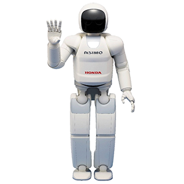

What is Robotics?
Robotics is the the design, construction, operation, and use of robots and the systems used for their control, sensory feedback, and information processing.
So basically, ALL THINGS ROBOTS.
What is a Robot?
Seeing as robotics is everything to do with robots, in order to understand what the field of robotics is about, we need to know what a
robot is! A robot is a machine controlled by a computer that is capable of performing physical actions automatically. Examples could be
anything from Asimo from Honda (left) to an industrial robot arm used in a factory. (right)


There's a myriad of different robots out there, but in general, most robots have a similar mechanical structure, as well as one of a several general types of control systems.
The Mechanical Structure of a Robot
Although the mechanical structure of a robot can vary in complexity, they generally have the same structure.
- 1. Power source
- All robots have a power source. Without power, the robot cannot do anything. Currently, the main power sources are batteries, but there are others, such as solar power, hydrolics, and others.
- 2. Actuation
- Actuators are what actually help the robot move. By definition of a robot, it has to have some sort of physical movement, so without an actuator, we have no robot. The most common actuators are electrical motors that control wheels or gears and linear actuators that control industrial robots usually found in factories.
- 3. Sensing
- Not all robots have the ability to sense what is around them, but for more complicated robots, this type of thing is required. If a robot was moving and needed to avoid a tree, the robot would need to know it was there. That is the job of sensors. Some sensors include computer vision, touch sensors, lidar, radar, sonar, and others.
- 4. Manipulation
- One of the main things that makes a robot useful is its ability to manipulate its surroundings. It wouldn't be very helpful if the only thing a robot could do was just flail around! One of the most commonly known manipulator is a gripping hand.
- 5. Locamotion
- This just means that certain robots can navigate their surroundings on their own, like the Asimo example given earlier. Similar to sensing, not all robots have locamotive ability. The industrial factory robot is an example of this.
There are many other characteristics a robot can have, but this is just the general structure.
The Robot's Control (The Robot's BRAIN!)
In order for the mechanical structure of the robot to actually be able to do anything, it must be controlled. There are several phases involved in the control of the robot: perception, processing, and action. The perception stage involves receiving information from sensors about the environment or the condition of the robot or from an external source, the processing stage is where the robot takes the information and decides what to do with it, and the action stage is when the robot actually does what it decided it would do. There are different levels of autonomy (how much a robot can perform on its own) for each robot's control system:
- Different Levels of Autonomy
- 1. Teleoperation
- This is where a person has almost total control over the robot's action. It is one of the lowest levels of autonomy.
- 2. Supervisory
- This level of autonomy is where an operator specifies general movements or potitional changes and the robot decides the specific actions.
- 3. Task-level
- Task-level autonomy is where a person commands a task, and the robot automatically figures out how to acomplish them.
- 4. Autonomous
- At this level of autonomy, robots can go without any human interaction for extended periods of time. This one of the highest levels of autonomy.
Applications for Robots
There are already many applications for robots, and as the field advances, the amount of possible applications will only increase. Many robots are created for jobs that are hazardous to people, like search and rescue in unstable conditions, exploring unsafe mines or shipwrecks, or defusing bombs. Here are some of them (these can range from widely used to those that are currently a work in progress):
- - Manufacturing
- These robots are used in autonomously manufacturing products in a factory. These robots can account for about half the labor in the auto industry. There are even 100% automated factories from IBM! The industrial factory robot from earlier is part of this application.
- - Military
- These robots are designed for (as the name implies) military uses, such as search and rescue or attack.
- - Robot Combat
- This use is for sport and it consist of two or more robots fighting in an arena to tisable each other.
- - Cleaning Robots
- This is for the cleanup of contaminated areas like toxic waste spills or nuclear facilities.
- - Domestic Robots
- These are used in caring for the elderly
- - Medical Robots
- Some low-invasive surgeries are performed by these. This application also covers robots that act as couriers in hospitals as well as those that perform other hospital duties.
- - Agriculture Robots
- - Househols Robots
- - Herding Robots
- - Nanorobots
Conclusion/Takeaway
Robotics is an amazing feild, and as it advances, it can revolutionize the way we do things. This is a summary of this vast and rapidly expanding field, and I hope this gives you an idea of what this field is all about and encourages you to investigate more!